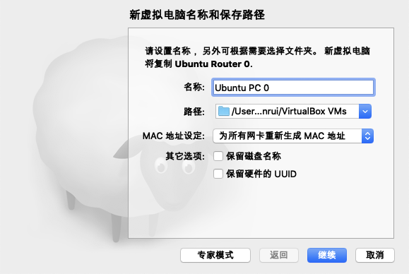
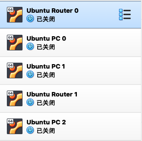
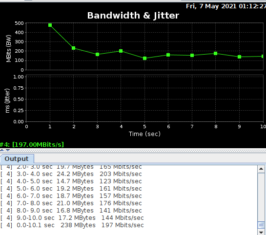
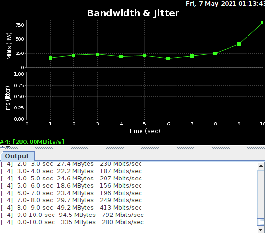
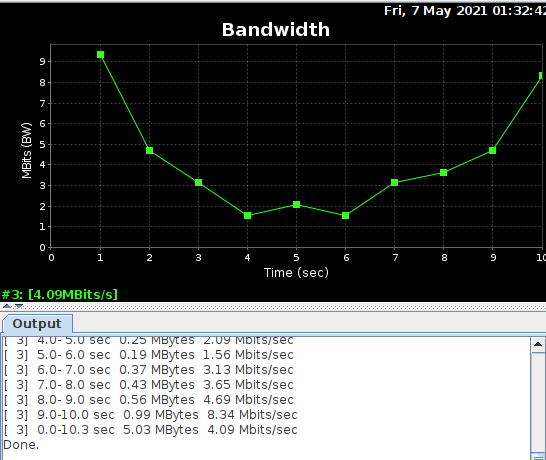
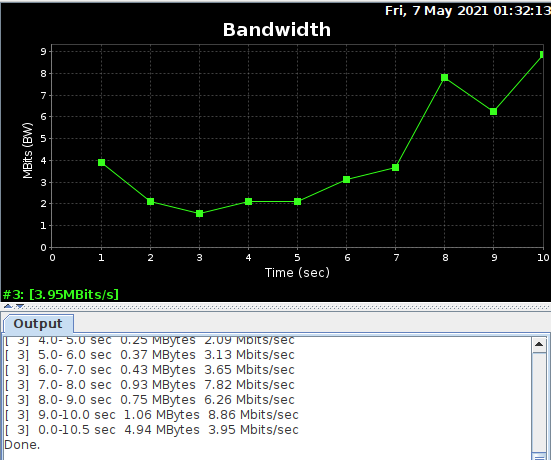

1 安装net-tools
如果是新装的ubuntu虚拟机可能连最基本的ifconfig等网络工具命令都没有，所以首先安装net-tools。
sudo apt install net-tools2 安装jperf
iperf是一个网络性能测量和调整工具，可以提供网络的时延，吞吐量、丢包率、网络抖动等信息，jperf在iperf的基础上提供了图形化界面。
首先安装iperf：
sudo apt-get install iperf 然后安装jperf，因为jperf依赖jre环境来运行图形化程序，因此首先检查是否安装Java，如果没有则使用以下命令：
sudo apt install openjdk-8-jdk然后在xjperf Google CodePage下载最新版本的jperf。
解压缩后，进入目录下赋予权限后运行bash文件：
sudo chmod u+x jperf.sh # or sudo chmod a+x jperf.sh command
./jperf.sh就可以看到jperf的图形化界面了。
3 实验使用的拓扑结构
4 配置虚拟机
可以看到上面的拓扑结构由两台路由器+三台主机构成，因此我们可以采用5台虚拟机模拟的方式来搭建拓扑：
- Ubuntu Router 0：模拟Router 0
- Ubuntu PC 1：模拟PC 0
- Ubuntu PC 2：模拟PC 1
- Ubuntu Router 1：模拟Router 1
- Ubuntu PC 3：模拟Server
首先在原来的虚拟机上复制出另外4台虚拟机，注意MAC地址设定选择重新生成地址。


根据拓扑结构可以得出网络使用三个网段，因此可以用过三个虚拟网卡接口来模拟。
打开virtual box主机网络管理器新建三个虚拟网卡并配置对应拓扑图上的IP地址。
依次设置每个虚拟机的网卡，连接方式都是Host-Only，注意两台Router要配置两个网卡，PC只用配置一个网卡。
Router 0
PC 0 PC 1
Router 1
PC 2
5 虚拟机模拟拓扑结构
接下来按照拓扑结构为每个虚拟机依次配置网络信息。注意首先要关闭系统的网络服务，不然DHCP服务会改变我们手动设置的IP地址等信息。
PC 0和PC 1要配置IP地址和网关地址。
PC 0
sudo service network-manager stop
sudo ip link set enp0s3 down
sudo ip link set enp0s3 name eth0
sudo ip link set eth0 upsudo ifconfig eth0 192.168.56.1 netmask 255.255.255.0
sudo route add default gw 192.168.56.254PC 1
sudo service network-manager stop
sudo ip link set enp0s3 down
sudo ip link set enp0s3 name eth0
sudo ip link set eth0 upsudo ifconfig eth0 192.168.56.2 netmask 255.255.255.0
sudo route add default gw 192.168.56.254路由器不仅要配置两个接口的IP地址，还要配置转发表。
Router 0
sudo service network-manager stop
sudo ip link set enp0s3 down
sudo ip link set enp0s3 name eth0
sudo ip link set eth0 up
sudo ip link set enp0s8 down
sudo ip link set enp0s8 name eth1
sudo ip link set eth0 upsudo ifconfig eth0 192.168.56.254 netmask 255.255.255.0
sudo ifconfig eth1 192.168.57.1 netmask 255.255.255.0
sudo ip route add 192.168.56.0/24 via 192.168.56.254
sudo ip route add 192.168.57.0/24 via 192.168.57.1
sudo ip route add 192.168.58.0/24 via 192.168.57.2因为我们用的Linux的虚拟机模拟路由器的行为，所以要把Linux系统的转发功能打开。
在root权限下，使用命令：
echo 1 > /proc/sys/net/ipv4/ip_forward如果是刚新建的虚拟机，没设置root密码，可以用以下命令设置新密码：
sudo passwd rootRouter 1
sudo service network-manager stop
sudo ip link set enp0s3 down
sudo ip link set enp0s3 name eth0
sudo ip link set eth0 up
sudo ip link set enp0s8 down
sudo ip link set enp0s8 name eth1
sudo ip link set eth0 upsudo ifconfig eth0 192.168.58.254 netmask 255.255.255.0
sudo ifconfig eth1 192.168.57.2 netmask 255.255.255.0
sudo ip route add 192.168.56.0/24 via 192.168.57.1
sudo ip route add 192.168.57.0/24 via 192.168.57.2
sudo ip route add 192.168.58.0/24 via 192.168.58.254root权限下
echo 1 > /proc/sys/net/ipv4/ip_forwardPC 2
sudo service network-manager stop
sudo ip link set enp0s3 down
sudo ip link set enp0s3 name eth0
sudo ip link set eth0 upsudo ifconfig eth0 192.168.58.1 netmask 255.255.255.0
sudo route add default gw 192.168.58.254设置完之后进行测试，保证各个网段的主机和路由器之间都能ping通。
6 QoS模块——TC介绍
6.1 TC流量控制方式
在Linux操作系统中，实现QoS的工具是流量控制器TC（Traffic Control），它利用队列规定建立处理数据包的队列，并定义队列中的数据包被发送的方式， 从而实现对流量的控制。
流量控制的方式主要有：
- SHAPING(限制)：当流量被限制，它的传输速率就被控制在某个值以下。限制值可以大大小于有效带宽，这样可以平滑突发数据流量，使网络更为稳定。shaping（限制）只适用于向外的流量。
- SCHEDULING(调度)：通过调度数据包的传输，可以在带宽范围内，按照优先级分配带宽。SCHEDULING(调度)也只适于向外的流量。
- POLICING(策略)：SHAPING用于处理向外的流量，而POLICIING(策略)用于处理接收到的数据。
- DROPPING(丢弃)：如果流量超过某个设定的带宽，就丢弃数据包，不管是向内还是向外。
6.2 TC规则建立
TC对流量的处理由三种对象控制：qdisc(排队规则)、class(类别)和filter(过滤器)。
qdisc(排队规则)是queueing discipline的简写，Linux内核通过某个网络接口发送数据包时，都需要按照为这个接口配置的qdisc(排队规则)把数据包加入队列。然后，内核会尽可能多地从qdisc里面取出数据包，把它们交给网络适配器驱动模块。
最简单的QDisc是pfifo它不对进入的数据包做任何的处理，数据包采用FIFO的方式通过队列。而对于没能及时处理的数据包，会进行缓存。
qdisc的分为classless qdisc和classful qdisc，即不可分类QDisc和可分类QDisc。
classless qdisc：
[p|b]fifo：使用最简单的qdisc，纯粹的先进先出。只有一个参数：limit，用来设置队列的长度,pfifo是以数据包的个数为单位；bfifo是以字节数为单位。pfifo_fast：如果打开了Linux内核的高级路由器(Advanced Router)编译选项，pfifo_fast就是系统的标准qdisc。它的队列包括三个波段(band)。在每个波段里面，使用先进先出规则。red：Random Early Detection(随机早期探测)。如果使用这种qdisc，当带宽的占用接近于规定的带宽时，系统会随机地丢弃一些数据包。它非常适合高带宽应用。sfq：Stochastic Fairness Queueing（随机公平队列）。按照会话(session–对应于每个TCP连接或者UDP流)为流量进行排序，然后循环发送每个会话的数据包。tbf：Token Bucket Filter的简写。使用令牌桶算法构造一个缓冲区，适合于把流速降低到某个值。
classful qdisc：
CBQ：Class Based Queueing(基于类别排队)的缩写。它实现了一个丰富的连接共享类别结构，既有限制(shaping)带宽的能力，也具有带宽优先级管理的能力。HTB：Hierarchy Token Bucket（层次令牌桶）的缩写。HTB通过TBF(Token Bucket Filter)实现带宽限制，也能够划分类别的优先级。HTB不仅可以保证每个类别的带宽，还可以设定带宽上限，并且允许特定的类突破带宽上限，占用别的类的带宽。PRIO：PRIO QDisc不能限制带宽，它只能划分流量优先级。使用PRIO QDisc可以很容易对流量进行优先级管理，只有属于高优先级类别的数据包全部发送完毕，才会发送属于低优先级类别的数据包。
类class基于qdisc，针对一个队列需建立一个根分类，然后再在其上建立子分类。通过创建类来构建一个树结构，对流量进行类别划分，并对每个class提供相应的流量规则。
过滤器filter服务于分类，用于实现不同的流量到分类的映射，比如把来自不同IP地址、使用不同协议类型（端口号）的流量映射到不同的分类。
7 TC实现QoS实例
假设在上图的服务器中，提供HTTP（Web）、SMTP（E-mail）、Telnet三种协议的服务，我们希望根据实际使用场景给三种协议提供不同的带宽来保证服务质量，给Telnet独立分配20Mbit/s，剩下80Mbit/s的分配给HTTP和SMTP共享，保证他们的带宽下限为40Mbit/s，但同时又能够互相借用对方的带宽。
在模拟Router1的虚拟机上对数据的出端口eth0，使用如下TC命令：
# 1. 建立队列
tc qdisc add dev eth0 root handle 1: htb default 20
# 2. 建立分类
# 1）为Telnet建立子分类1:1，分配带宽20Mbit
tc class add dev eth0 parent 1:0 classid 1:1 htb rate 20Mbit ceil 20Mbit
# 2）建立子分类1:2，分配剩余的带宽80Mbit
tc class add dev eth0 parent 1:0 classid 1:2 htb rate 80Mbit ceil 80Mbit
# 3）为SMTP建立1:2的子分类1:21，保证带宽40Mbit，上限带宽80Mbit
tc class add dev eth0 parent 1:0 classid 1:21 htb rate 40Mbit ceil 80Mbit
# 4）为HTTP建立1:2的子分类1:22，保证带宽40Mbit，上限带宽80Mbit
tc class add dev eth0 parent 1:0 classid 1:22 htb rate 40Mbit ceil 80Mbit
# 3. 建立过滤器
# 1) 绑定Telnet即端口号23到分类1:1
tc filter add dev eth0 protocol ip parent 1:0 prio 1 u32 match ip dport 23 0xffff flowid 1:1
# 2) 绑定SMTP即端口号25到分类1:21
tc filter add dev eth0 protocol ip parent 1:0 prio 1 u32 match ip dport 25 0xffff flowid 1:21
# 3) 绑定HTTP即端口号80到分类1:22
tc filter add dev eth0 protocol ip parent 1:0 prio 1 u32 match ip dport 80 0xffff flowid 1:22使用jperf进行流量监测，为了避免端口冲突，假定三项服务对应的端口号分别为5023，5025，5080（修改对应的filter）。
在模拟Server的虚拟机上使用./jperf.sh运行三个jperf，然后用三个不同主机上的客户端jperf去发送数据。

在没有添加TC规则的时候：
23端口

25端口
80端口

添加TC规则后：
23端口
25端口

80端口

在虚拟机环境进行这个实验有一个严重缺点，当多个jperf客户端服务器同时通信时，会导致CPU占用率过高，导致主机端的发送时延增大从而使数据变得不准确，因此最好的实验环境还是实体主机。
此外，按照以上的步骤，可以对这一个拓扑结构通过不同的TC规则实现更多的QoS机制，也可以改变拓扑结构，对其他网络进行QoS机制的建立。